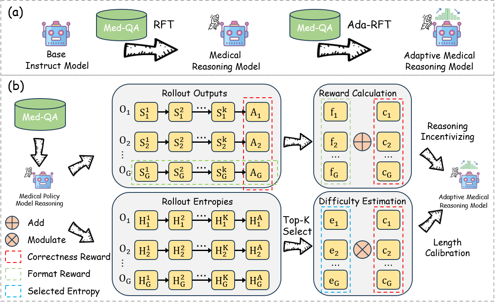

Introduction
Recent advances in inference time scaling with extended long chain-of thought have significantly improved the reasoning capabilities of both general and medical large language models (LLMs). However, these models tend to engage in lengthy reasoning processes regardless of the difficulty of the input question, leading to increased inference costs in real-world applications. Therefore, enabling adaptive thinking where models think less for simpler questions and think more for complex ones is critical for the effective use of medical LLMs in practice. Despite its importance, there is a lack of end-to-end approaches designed to enhance the adaptive thinking capabilities of medical LLMs while providing a comprehensive examination of the trade-off between performance and computational cost. To bridge this gap, we propose AdaThink-Med, the first end-to-end framework designed to enhance adaptive thinking ability in medical reasoning models with uncertainty-guided length calibration. AdaThink-Med first generates multiple candidate outputs for each question, evaluates the correctness and uncertainty of each candidate, and then estimates problem difficulty via an uncertainty-guided length calibration module. For outputs with low difficulty and correct answers, the framework penalizes longer reasoning paths; whereas for those with high difficulty and incorrect answers, it encourages extending the chain of thought to explore alternative solutions. On six public medical QA benchmarks, AdaThink-Med achieves up to 6.4× length reduction on average while retaining performance with only minimal degradation. Intriguingly, we observe that AdaThink-Med spontaneously develops two distinct reasoning modes, which we characterize as “non-thinking” and “thinking”, demonstrating the model's ability to suppress redundant reasoning processes dynamically.
